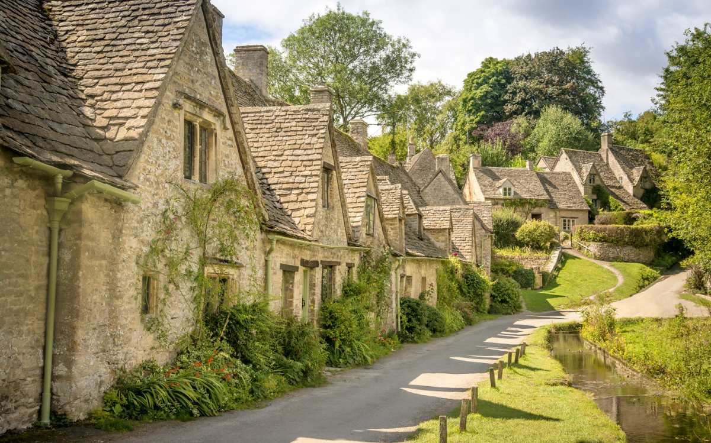
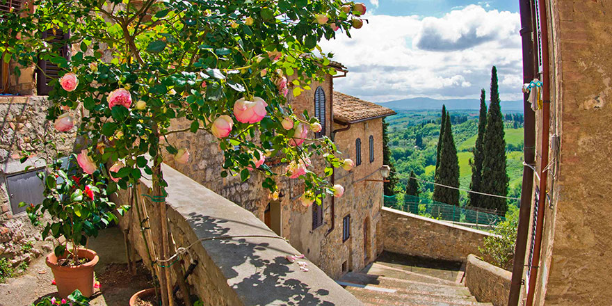
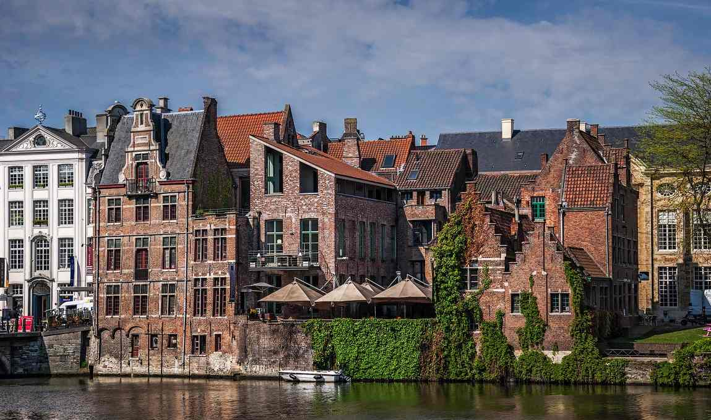
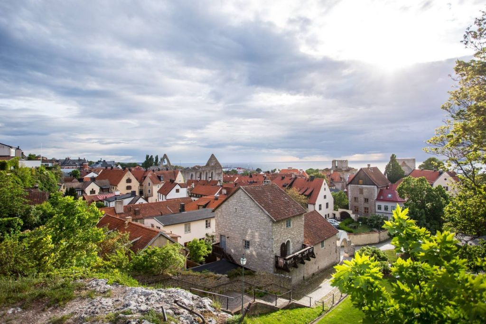
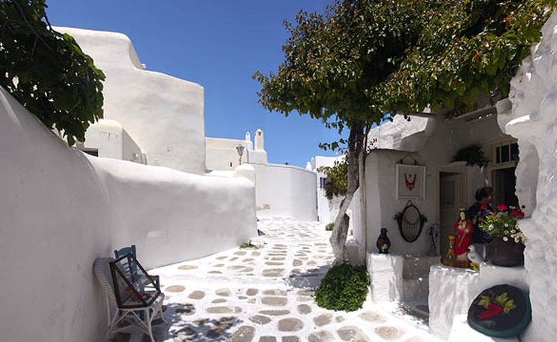
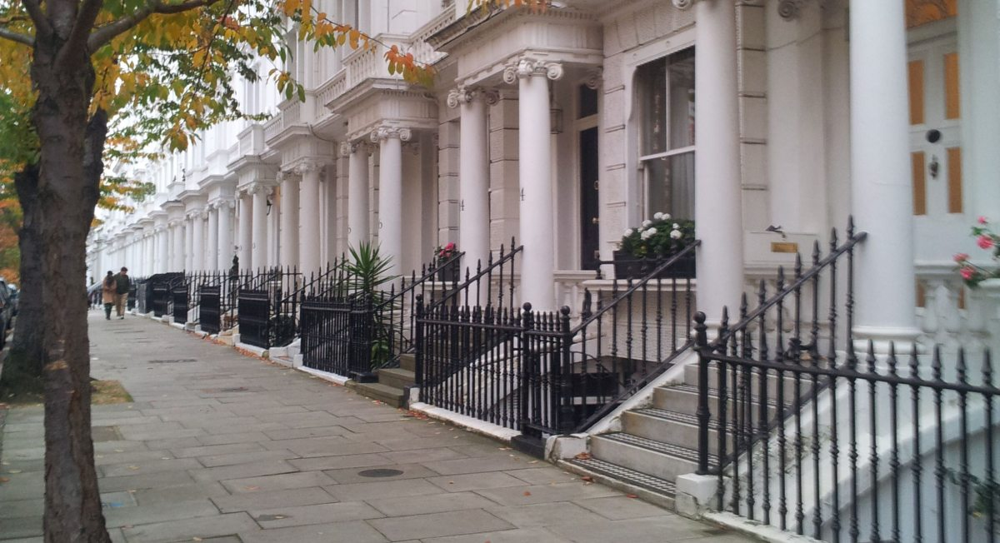
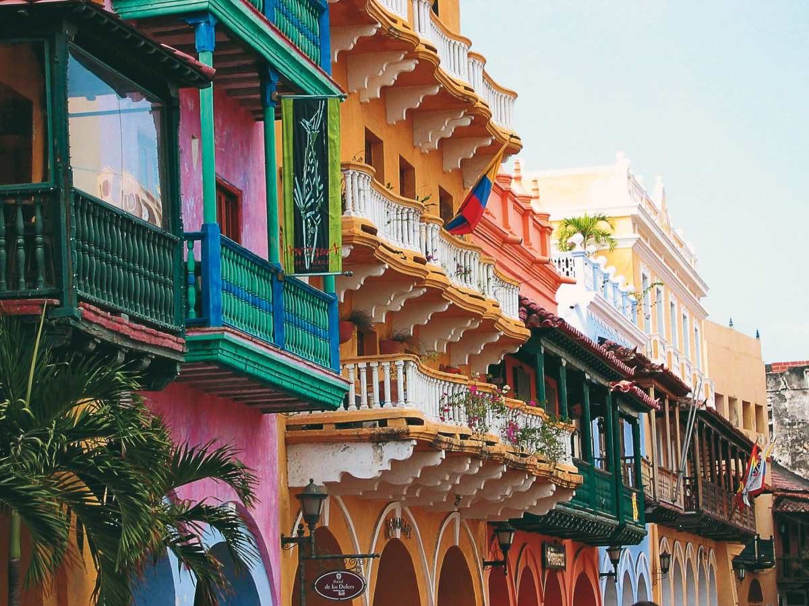
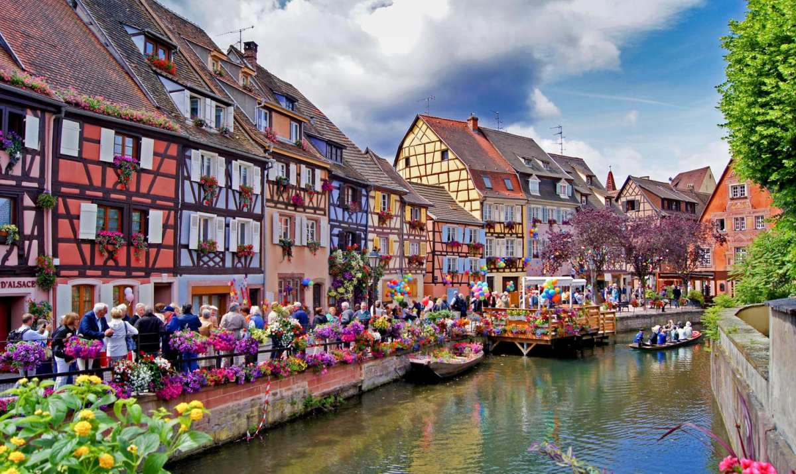

Найбільше захоплених відгуків отримало місто Біргу, Мальта. Воно знаходиться на південь від Валетти, і в складі Бормли і Сенглеа представлене як Три Міста або Коттонера (в честь великого магістра Котонера, при якому були побудовані їх фортифікації). Біргу був столицею Мальти в 16 ст. і витримав осаду Османської імперії в 1565 році. Після цього була побудована нова столиця, названа в честь переможця турків Жана де Валетта. Але кам’яна симфонія Біргу, особливо коли дивитися з моря, вражає сміливістю зодчих. Вузенькі вулиці дивують міксом класичних скульптур, мозаїк, простих віконниць і різнокольорових балконів
Експерти Homedit.com зробили опитування мандрівників та вивели рейтинг, у якому місті світу найгарніші житлові будинки. У більшості з цих міст ви, напевне, побували. І зауважили: справжню красу творять людські руки і турбота про естетику свого оточення.
Біргу, Мальта
Бібері, графство Глостершир.
На другому місці селище Бібері (Великобританія). Славиться своїми кам’яними котеджами 17 століття медового кольору, недоторканість яких суворо оберігають місцеві жителі. Вулиця Арлінгтон схожа на толкінієвський Шир, – не дивно, що це місце є одним з найбільш фотографованих у всій Англії. Для британців, до речі, село примітне ще й тим, що саме його зображення бачить власники британського паспорта на першому ж розвороті документа.
Тоскана, Італія
Тоскана, Італія
На третьому місці Тоскана, Італія! Чарівність провінційної Тоскани складають маленькі мальовничі містечка і села, розкидані по долинах і горбах. В Італії їх називають борго і цінують не менше великих культурних центрів. Тут роблять все, щоб життя в них не завмерло остаточно: щороку вибирають найкрасивіші борго по регіонах, складають путівники, приваблюють туристів місцевими святами і фестивалями. Багато будинків у Тоскані – це історія місцевих родин, висловлена у камені. У поєднанні з квітами і зеленню – неперевершене видовище.
Гент, Бельгія
Старий Гент
На четвертому місці – будинки в Генті, Бельгія. Місто наповнене архітектурними пам’ятниками 15 століття, що ховаються у лабіринтах старих вуличок і каналів. Гент є одним з найбільш мальовничих бельгійських міст. Туристи відвідують його у парі з Брюгге, який також дивним чином зберіг свій середньовічний вигляд і колорит.
Вісбю, Швеція
Вісбю, Швеція
Розташований на шведському острові Готланд, Вісбю вражає страшенно давніми гарними будинками, деякі з них заросли мохом від часу. Місто недарма називають містом троянд і руїн: безліч прекрасних квітів на його вулицях контрастує із середньовічними руїнами. Вісбю – одне з найстаріших міст Скандинавії, наскрізь просякнуте духом середньовіччя.
Міконос, Греція
Греція
Острів у свій час уподобав мільйонер Онасис. З того часу жителі Міконоса усіма силами стараються вражати туристів білою чистотою будинків і дворів, яка контрастує з трояндами та синіми вікнами. Селище Міконос нагадує яскраву коштовну скриньку серед кам’янистого острова і сюди щодня на круїзних лайнерах прибувають тисячі цінителів рукотворної краси у грецькому стилі.
Лондон, Англія
Лондон
Респонденти рейтингу не пояснили, за що вони цінують красу Лондона: за простоту англійського стилю чи колони вікторіанської епохи. А може їм подобається милі садочки для мешканців першого поверху, наповнені духом старої Англії. Прогулянка будь-яким районом Лондона – це завжди задоволення – саме від доглянутих будинків.
Сан-Франциско, США
Сан-Франциско
Вулиця Steiner – одна з найбільш незвичайних у Сан-Франциско. Саме тут розташовуються старі будинки, вцілілі під час землетрусу 1906 року. Будівлі вікторіанської епохи привертають увагу туристів, про них часто пишуть у ЗМІ, їх зображення можна побачити на листівках, і, звичайно ж, в цьому районі постійно проходять зйомки фільмів, телепередач і рекламних роликів. Інтерес до цих будинків виник лише в 1963 році, коли художник Буч Кардум перефарбував свій дім знову в синій і зелений колір. Одні критикували настільки сміливе рішення, а інші – стали відроджувати і свої будинки.
Картахена, Колумбія
Картахена
Гуляючи Старим містом Картахени, неможливо відірвати погляд від балконів. Для місцевих жителей оздоблення балконів подібне до спорту. Усі намагаються підкреслити саме цю частину житла: квітами, фарбою, мереживнимі фіранками, декоративними деталями, вигадливими меблями, навісами. Роблять це недарма. Раніше раз на рік в Картахені вибирали найгарнішій балкон. Після чого переможцям місцева влада дозволяла не платити податок на нерухомість. Зараз такі конкурси не проводять, одначе потяг до прекрасного залишився.
Кольмар, Франція
Кольмар
Кольмар знаходиться у Ельзасі, на перетині туристичних – винних і гастрономічних – шляхів. Всередині Старого міста дивовижним чином прижилися різноманітні стилі архітектури. Тут легко можна знайти шедеври ранньої готики, бароко, рококо, класицизму і спадщину епохи Відродження. Тут є своя Венеція з гондолами і каналами – Petite Venise – де вздовж річки вишикувався ланцюжок фахверкових будиночків 14-18 століть.